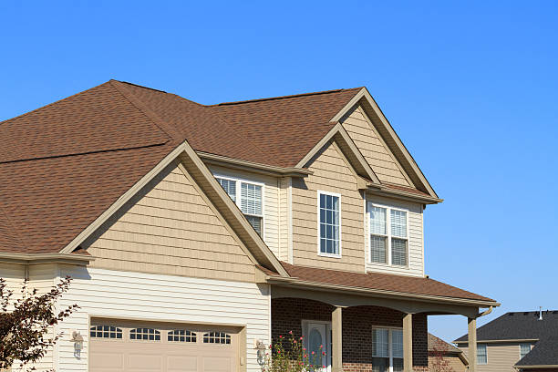
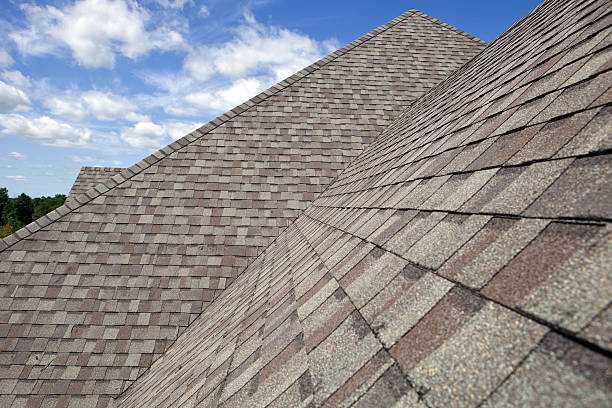
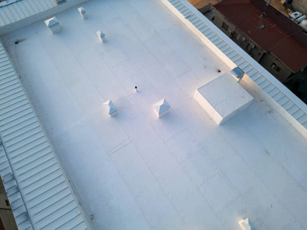

Roofing support for properties where one job affects many households.
Multi-family roofing in Newark involves managers, ownership groups, residents, and building systems all at once, so communication and coordination need to be built into the service.
Resident clarity
People need to understand how the work affects their space and schedule.
Phased execution
Larger buildings often benefit from more structured work flow.
Property-level planning
The scope should support the building, not just the immediate issue.
Better updates
Managers and owners need communication that helps them steer the project.
Multi-family focus
The roofing process needs to support residents, managers, and ownership at the same time.
Apartment buildings, condo properties, duplex portfolios, and managed communities all need more communication than a smaller single-property job. That is why these pages should feel deeper and more reassuring.
Resident communication
People want to know how access, noise, timing, and work areas may affect daily routines.
Management confidence
Property teams need updates they can actually use to guide expectations and next steps.

Planning
Phased work matters
Larger or occupied buildings often need a better sequencing plan so the project feels controlled.
Clarity
One issue affects many units
A leak, replacement decision, or major roof project can ripple through many households at once.
Outcome
The building should feel better managed
A strong roofing process adds confidence for residents, boards, managers, and ownership groups.
Property types
Where multi-family roofing pages can speak more directly.
Apartment buildings
Higher resident count usually means more attention to notice and scheduling.
Condo communities
Boards and shared ownership can change how roofing decisions are reviewed.
Townhome rows
Connected buildings often require a broader roof conversation than a single-unit repair.
Managed portfolios
Consistency, budgeting, and reporting matter when multiple properties are involved.

Page close
A longer page makes this service feel more complete for managers and ownership groups.
Instead of ending after a short intro, the page now has room to explain resident communication, property types, phased work, and the kind of project guidance multi-family roofing usually requires.
Talk About a Multi-Family Roof